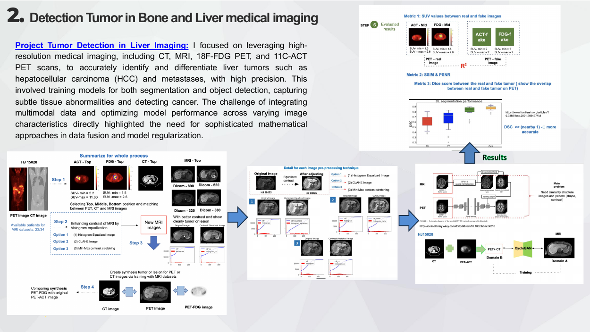

Research project
Liver Tumor Detection & Multimodal Imaging
Exploring liver tumor identification using multimodal medical imaging.
Research motivation
Multimodal integration and variation in image characteristics motivate work on data fusion and regularization.
Approach & scope
The portfolio describes CT, MRI and PET imaging for differentiating liver lesions, with segmentation and object detection methods.

This page summarizes documented research experience or a developing project. Numerical performance claims, publication details and dataset access are not provided without verification.
Source: Research Experience – Van Nguyen (supplied portfolio). Images reproduced from the original portfolio.
Methodology
- Study complementary anatomical and metabolic information from CT, MRI and PET.
- Explore image preprocessing, lesion localization, segmentation and object detection.
- Investigate multimodal fusion and model regularization to address modality differences.
- Evaluate findings using dataset-appropriate reference annotations where available.
Results and limitations
The portfolio presents research workflows and selected figures; no new numerical performance claims are made here.